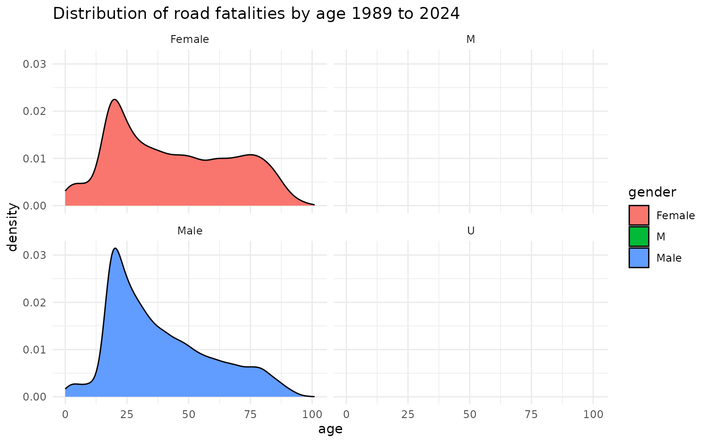

Getting Started
Adam Gruer (+Kristy Robledo)
2024-10-21
getting-started.RmdThis data is taken from the Australian Road Deaths Database, which provides basic details of road transport crash fatalities in Australia as reported by the police each month to the State and Territory road safety authorities, obtained from: https://data.gov.au/dataset/ds-dga-5b530fb8-526e-4fbf-b0f6-aa24e84e4277/details?q=crash
Details provided in the database fall into two groups:
the circumstances of the crash, for example, date, location, crash type
some details regarding the persons killed, for example, age, gender and road user group.
The fatality data is updated every month. The heavy vehicle flags (for articulated truck, heavy rigid truck and bus involvement) are only updated each quarter, and are current to within two months. Information for heavy rigid truck involvement in crashes earlier than 2004 is incomplete.
Package Author’s Notes
Data was available at URL as at 12th December 2019. Data is imported into R, cleaned and transformed into a tidy format.
Indemnity Statement:
The Bureau of Infrastructure, Transport and Regional Economics has taken due care in preparing this information. However, noting that data have been provided by third parties, the Commonwealth gives no warranty as to the accuracy, reliability, fitness for purpose, or otherwise of the information.
Copyright
© Commonwealth of Australia, 2024
This work is copyright and the data contained in this publication should not be reproduced or used in any form without acknowledgement.
Import data from the BITRE website into R
crashes <- oz_road_fatal_crash()
fatalities <- oz_road_fatalities()Variables available
Crashes
| crash_id | n_fatalities | month | year | weekday | time | state | crash_type | bus | heavy_rigid_truck | articulated_truck | speed_limit | date | date_time |
|---|---|---|---|---|---|---|---|---|---|---|---|---|---|
| 20233052 | 1 | 10 | 2023 | Saturday | 23:00:00 | Qld | Single | No | No | No | 70 | 2023-10-01 | 2023-10-01 23:00:00 |
| 20233053 | 1 | 10 | 2023 | Sunday | 16:00:00 | Qld | Multiple | No | No | No | 60 | 2023-10-01 | 2023-10-01 16:00:00 |
| 20231113 | 1 | 10 | 2023 | Saturday | 00:05:00 | NSW | Single | No | No | No | 100 | 2023-10-01 | 2023-10-01 00:05:00 |
| 20237008 | 1 | 10 | 2023 | Friday | NA | NT | Single | No | No | No | NA | 2023-10-01 | 2023-10-01 00:00:00 |
| 20234067 | 1 | 10 | 2023 | Sunday | 22:28:00 | SA | Single | No | No | No | 60 | 2023-10-01 | 2023-10-01 22:28:00 |
| 20235100 | 1 | 10 | 2023 | Sunday | 20:43:00 | WA | Single | No | No | No | NA | 2023-10-01 | 2023-10-01 20:43:00 |
Fatalities
| crash_id | month | year | weekday | time | state | crash_type | bus | heavy_rigid_truck | articulated_truck | speed_limit | road_user | gender | age | date | date_time |
|---|---|---|---|---|---|---|---|---|---|---|---|---|---|---|---|
| 20237008 | 10 | 2023 | Friday | NA | NT | Single | No | No | No | NA | Driver | Female | 24 | 2023-10-01 | 2023-10-01 00:00:00 |
| 20234009 | 10 | 2023 | Saturday | 03:00:00 | SA | Single | No | No | No | 100 | Driver | Male | 22 | 2023-10-01 | 2023-10-01 03:00:00 |
| 20233087 | 10 | 2023 | Saturday | 03:00:00 | Qld | Single | No | No | No | 80 | Driver | Male | 19 | 2023-10-01 | 2023-10-01 03:00:00 |
| 20233149 | 10 | 2023 | Sunday | 03:00:00 | Qld | Single | No | No | No | 60 | Passenger | Male | 37 | 2023-10-01 | 2023-10-01 03:00:00 |
| 20233190 | 10 | 2023 | Sunday | 03:00:00 | Qld | Multiple | No | No | No | 100 | Motorcycle rider | Male | 35 | 2023-10-01 | 2023-10-01 03:00:00 |
| 20233052 | 10 | 2023 | Saturday | 23:00:00 | Qld | Single | No | No | No | 70 | Driver | Female | 32 | 2023-10-01 | 2023-10-01 23:00:00 |
Plot crashes by year
crash_plot <- ggplot(crashes,
aes(x = year)) +
geom_line(stat = "count") +
theme_minimal() +
labs(title = "Annual number of fatal car accidents per year")
crash_plot
Plot crashes by year and state
crash_plot +
scale_y_continuous(trans = "log2") +
facet_wrap(~state) +
labs(title = "Annual number of fatal car accidents per year and state",
subtitle = "log2 scale" )
Fatalities by year
fatality_plot <- fatalities %>%
mutate(year = lubridate::year(date_time)) %>%
ggplot(aes(x = year)) +
geom_line(stat = "count") +
theme_minimal() +
ggtitle("Annual number of road fatalities")
fatality_plot
fatality_plot <- fatalities %>%
filter(gender != "Unspecified") %>%
mutate(year = lubridate::year(date_time)) %>%
ggplot(aes(x = age,
fill = gender )) +
geom_density() +
facet_wrap(~gender) +
theme_minimal() +
ggtitle("Distribution of road fatalities by age 1989 to 2024")
fatality_plot## Warning: Removed 98 rows containing non-finite outside the scale range
## (`stat_density()`).## Warning: Groups with fewer than two data points have been dropped.## Warning in max(ids, na.rm = TRUE): no non-missing arguments to max; returning
## -Inf